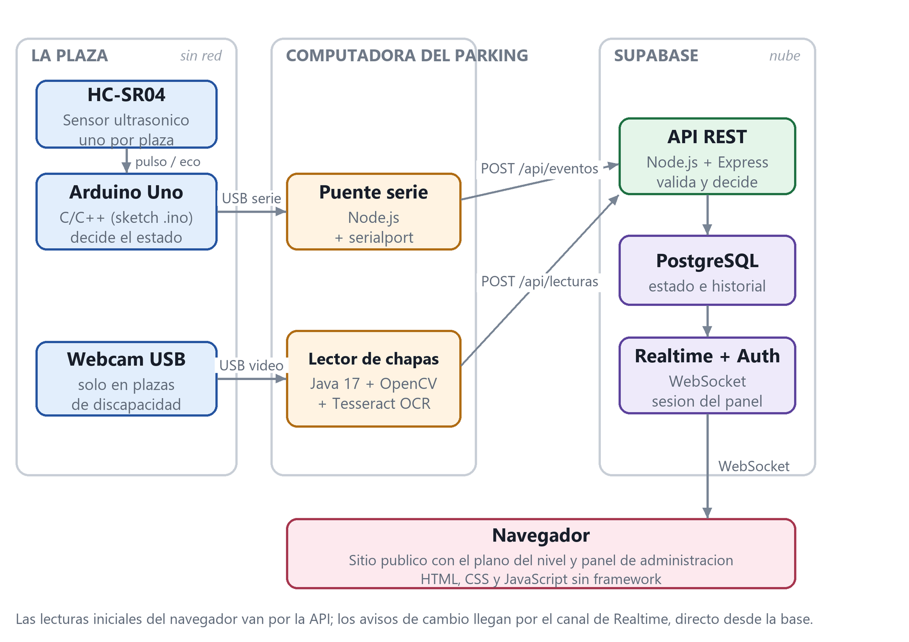
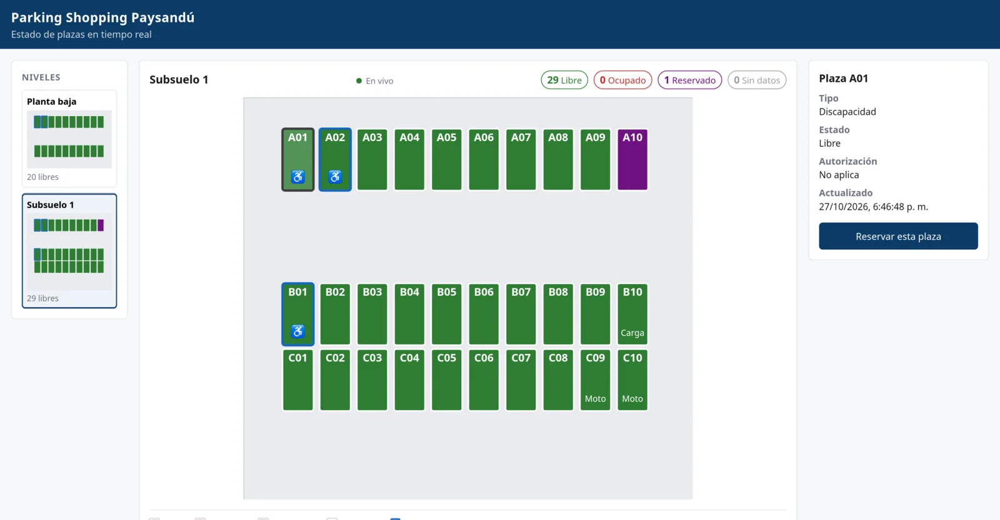
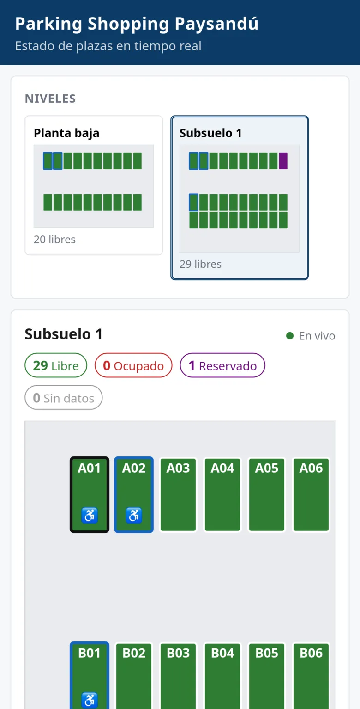

ParkEx
Ver el sitio- Contexto
- Concurso ConectaLab – Litoral Norte (UTU)
- Equipo
- 5 estudiantes del ITSP, con dos docentes tutores
- Rol
- Cofundador · desarrollo de la plataforma
- Repositorio
- github.com/facuduarte-dev/ParkEx
- Sitio web
- parkex.netlify.app
- Stack
- Arduino Uno + HC-SR04 · Node.js + Express · PostgreSQL en Supabase · Realtime · Java + Tesseract OCR · HTML, CSS y JS
- Descripción
- En los estacionamientos privados la gente recorre niveles enteros buscando lugar, y las plazas para personas con discapacidad se ocupan sin permiso. ParkEx muestra sobre el plano de cada nivel qué plazas están libres u ocupadas, y en las reservadas lee la matrícula por OCR y comprueba si termina en DI, el distintivo uruguayo de discapacidad.
Parking Shopping Paysandú
Estado de plazas en tiempo real
Planta baja
En vivo
- Libre
- Ocupado
- Reservado
- Sin datos
- Plaza de discapacidad
Seleccione una plaza del plano para ver su detalle.
GET /api/niveles · GET /api/plazas · Realtime conectado
- Un sensor ultrasónico en cada plaza detecta si hay un auto.
- Un puente en la computadora del parking manda cada cambio a la API.
- La API lo guarda en Supabase y el plano se actualiza solo en el navegador.
- En las plazas reservadas, una cámara lee la matrícula y busca el distintivo DI. Si no está, avisa a una persona.




- Timeline
- 04/08/2026 → 29/08/2026 · circuito validado de punta a punta el 25/08/2026 sobre una plaza real
- Proceso
- Ocho fases incrementales, cinco sin depender del hardware.
- Resultado
- Premio a la mejor exposición oral y a la excelencia académica en la III Semana Académica de Ingeniería en Logística (UTEC). Proyecto ganador de la 1.ª edición del concurso ConectaLab – Litoral Norte (UTU), eje 2 (Programación y pensamiento computacional), categoría EMS.